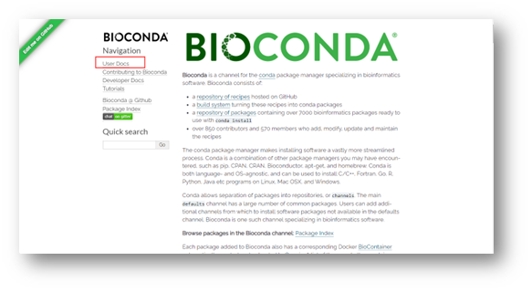

本地电脑分析转录组数据，目前主流的方法为 hisat2和salmon 再结合DEseq2进行数据前处理，之后需要结合使用R语言绘图。
方法一：基于比对的hisat2+DEseq 方法
一．Window10/11 安装Linux 子系统
打开控制面板， 点击“程序”
点击“启用或关闭window功能”
勾选“适用于Linux的Windows子系统”
再打开系统自带的应用商店，搜索“Ubuntu Linux发行版”
任选一个安装，安装完成后重启电脑使Linux子系统生效。
二．Linux子系统软件安装
打开Windows终端，点击下拉选项，选择Ubuntu，首次进入会有一个设置账号密码的界面，按照需要设置一个账号就行。
转录组分析需要再Linux环境下安装一些软件
不同Linux发行版安装软件的方式有些不同，Ubuntu可以通过apt命令安装，但是为了更方便的安装和管理软件，使用第三方的conda更加方便，conda相当于Linux系统下的一个应用商店，而bioconda是conda的生信类软件的分支，比conda更小
bioconda 安装
打开bioconda官网：News — Bioconda documentation
点击“User Docs“，跳转到用户手册界面
找到On linux run
复制代码：
curl -O https://repo.anaconda.com/miniconda/Miniconda3-latest-Linux-x86_64.sh
输入终端，回车
如果出现下面提示，说明我们还需要再安装一个curl软件
根据提示，输入：
sudo apt install curl
再输入当前账号的密码（在终端上不显示），回车
开始安装：
再输入
curl-O https://repo.anaconda.com/miniconda/Miniconda3-latest-Linux-x86_64.sh
回车
开始下载：
输入：
sh Miniconda3-latest-Linux-x86_64.sh
安装
根据提示输入ENTER，然后一直输入回车
直到提示输入“yes”or“no”
手动输入yes
安装完成
再根据用户手册设置通道：
再输入命令source ~/.bashrc 刷新一下设置（否则会提示“conda：未找到命令“）
再终端依次输入下面命令：
conda config --add channels defaults
conda config --add channels bioconda
conda config --add channels conda-forge
输入 conda看是否安装成功，若出现以下界面说明bioconda安装成功
确保已经安装好python（可在终端直接输入python），许多软件需要python环境
根据转录组分析流程，首先需要进行质量控制
三．生成质量汇报
Fastqc质量汇报
质量控制软件fastqc安装：
终端上输入
conda install fastqc
回车
输入“y”回车
安装结束：
将得到的下机数据Raw-Data放在一个剩余容量较大的磁盘文件夹
转换工作目录到存放Raw-Data的文件夹，如果有不同的磁盘分区可以通过命令：
df -h
查看挂载的磁盘
比如，我把raw-data放在f盘的RNAseq-raw-data下
可以输入 :
cd /mnt/f/RNAseq-raw-data
可输入 ls 查看文件夹下的文件
首先建立一个输出文件夹：Fastqc-Result
mkdir Fastqc-Result
Fastqc使用方法：
fastqc -o <output dir> <seqfile1,seqfile2..>
比如我需要把以下以 .fq 结尾的文件全部进行质量控制，可输入以下命令;
fastqc -o Fastqc-Result *.fq
multiqc质量报告
下载multiqc：
conda install multiqc
multiqc可以对几个fastqc报告文件进行总结并汇总到一个报告文件中，以更直观到防止展示。使用方法
multiqc <analysis directory>
所以我们可以输入：
multiqc：Fastqc-Result
四．原始数据Raw-Data处理为Clean-Data
我们使用trim_galore
trim_galore：可以处理illumina，nextera3，smallRNA测序平台的双端和单端数据，包括去除adapter和低质量reads。 trim_galore的参数： trim_galore的参数在处理过程比较重要：
trim_galore使用方法：
trim_galore [options] <filename>
各项参数如下：
--quality <int> #设定phred quality阈值。默认20（99%的read质量），如果测序深度较深，可以设定25
--phred33 #设定记分方式，代表Q+33=ASCII码的方式来记分方式。这是默认值。
--paired # 对于双端结果，一对reads中若一个read因为质量或其他原因被抛弃，则对应的另一个read也抛弃。
--output_dir #输出目录，需确保路径存在并可以访问
--length #设定长度阈值，小于此长度会被抛弃。这里测序长度是100我设定来75，感觉有点浪费
--strency #设定可以忍受的前后adapter重叠的碱基数，默认是1。不是很明白这个参数的意义
-e <ERROR rate> #设定默认质量控制数，默认是0.1，即ERROR rate大于10%的read 会被舍弃，如果添加来--paired参数则会舍弃一对reads
<filename> #如果是采用illumina双端测序的测序文件，应该同时输入两个文件。
例如我们可以输入如下命令：
trim_galore -output_dir Clean-Data --paired --length 150--quality 25 --stringency 5 seq_1.fq. seq_2.fq.
clean-data数据质量控制
根据之前对raw-data数据的质量控制一样，对clean-data数据进行质量控制
五．使用hisat2 将clean-data比对到基因组
使用处理后的fastq文件和基因组与转录组比对，确定在转录组或者基因组中的关系。在转录组和基因组的比对采取的方案不同。分别是ungapped alignment to transcriptome和Gappedaligenment to genome。 软件：hisat2和STAR在比对回帖上都有比较好的表现。有文献显示，hisat2在纳伪较少但是弃真较多，但是速度比较快。STAR就比对而言综合质量比较好，在长短reads回帖上都有良好发挥。由于hisat2的速度优势，选择hisat2作为本次比对的软件。 在比对之前首先要先进行索引文件的获取或者制作。
索引文件获取
索引文件由9个文件组成
- 网站下载hisat2基因组索引
比如NCBI，等数据库
- 自己构建索引
简单的索引文件只需要一个基因组文件，比如我们这次用的基因组文件为：B335.fa文件结构组成如下
在终端输入
hisat2 -build -p 8 B335.fa B335
其中-p为线程数
最后的B335为结果文件的前缀
可得到上图的8个文件
比对回帖
如果是双端测序，比对方法如下
数据较少，可以通过以下命令进行分别比对
hisat2 -p 8 -x /mnt/f/RNAseq-raw-date/Clean-Date/index/B335 -1 K4Y1-1_val_1.fq -2 K4Y1-2_val_2.fq -S K4Y1-align.sam
其中的“S”为大写
数据较多的话可以写一个sh脚本（align.sh）
输入命令：
touch samAA.sh
然后编辑该sh文件
nano samAA.sh
在编辑其中输入命令：
for i in *1_val_1.fq;
do
i=${i%1_val_1.fq*};
nohup hisat2 -p 8 -x /mnt/f/RNAseq-raw-date/Clean-Date/index/B335 \
-1 ${i}1_val_1.fq \
-2 ${i}2_val_2.fq \
-S /mnt/f/RNAseq-raw-date/${i}align.sam \
2>/mnt/f/RNAseq-raw-date/${i}align.log
done
注：
for语句第一行是要取出该目录下序列的文件名，就是1_val_1.fq前面的名字，比如“K4Y1-”，
do 开始循环，只要存在这样的i就继续执行
nohup开始在后台运行比对，比如把log保存在“/mnt/f/RNAseq-raw-date/${i}align.log”里面，这样可以在文件里面查看是否成功。
直接在终端运行sh脚本:
sh align.sh
根据数据大小和电脑配置，处理的时间长短不同
之前的比对是随机的比对，因此我们需要对比对后的数据进行重拍
samtools 软件进行格式转换
SAM文件和BAM文件 samtools 是针对比对回帖的结果——sam和bam格式文件的进一步分析使用的软件。sam格式文件由于体量过大，一般都是使用bam文件来进行存储。由于bam文件是二进制存储所以文件大小比sam格式文件小许多，大约是sam格式体积的1/6 。
samtools将sam转换bam文件
samtools view -S seq.sam -b > seq.bam #文件格式转换
samtools sort seq.bam -o seq_sorted.bam ##将bam文件排序
samtools index seq_sorted.bam #对排序后对bam文件索引生成bai格式文件，用于快速随机处理。
samtools sort -@ 1 -o ../bam-dta/${i}.bam ${i}_align.sam 2>/mnt/hgfs/dnaseq/chrX_data/third/bam-dta/${i}bam.log
至此一个回帖到基因组对RNA-seq文件构建完成。这个seq_sourted.bam文件可以通过samtools或者IGV( Integrative Genomics Viewer)独立软件进行查看。在IGV软件中载入seq_sourted.bam文件。 可以很直观清晰地观察到reads在基因组中的回帖情况和外显子与内含子的关系。

sam文件重新排序
通过hisat2比对得到sam文件，如果重复多次用同一个命令比对同一条序列，每次得到的sam文件其实是大小一样但内容顺序不同的文件，所以我们需要用软件进行重新排序。
在sam文件所在目录建立bam.sh文件：
touch bam.sh
nano bam.sh
在文本编辑器中输入：
for i in *-align.sam;
do
i=${i%-align.sam*};
nohup samtools sort -@ 1 -o /mnt/f/RNAseq-raw-date/align/${i}-align.bam ${i}-align.sam 2>/mnt/f/RNAseq-raw-date/align/${i}-bam.log
nohup samtools index /mnt/f/RNAseq-raw-date/align/${i}-align.bam
done
保存后，运行该sh文件：
sh bam.sh
对回帖bam文件进行质量评估
samtools flagstate seq_sorted.bam > seq_sorted.flagstate
ls *.bam | while read id
do
samtools flagstat -@ 10 ${id} > ../9_bamqc/$(basename ${id} ".bam").stat
done
or
for i in *-align.bam;
do
i=${i%-align.bam*};
nohup samtools flagstat ${i}-align.bam > /mnt/f/RNAseq-raw-date/align/bamqc/${i}.stat
done
multiqc 统计：
multiqc bamqc
六．构建表达矩阵
未完待续。。。
参考来源：
RNA-seq流程学习笔记（7）-使用Hisat2进行序列比对_垚垚爸爱学习的博客-CSDN博客_hisat2